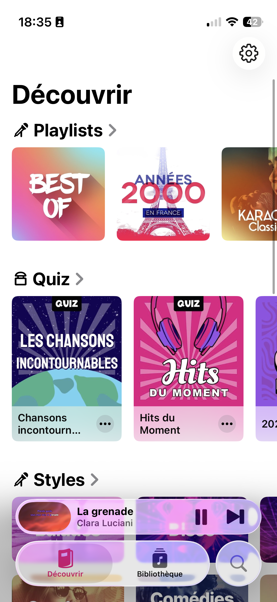

Leçon 1 · Squelette de l'app
Ta première vraie ligne de SwiftUI dans un vrai projet Xcode. On construit la barre d'onglets et l'écran d'accueil avec sa première rangée de playlists.
@State/@Binding en théorie, mais tu n'as jamais posé les composants d'écran concrets — TabView, NavigationStack, ScrollView — dans un projet qui build. C'est le premier morceau tangible de MISSION.md : un écran qui tourne, qu'on peut comparer à la vraie app.

https://github.com/Njko/karamock sur ton Mac.KaramockApp. Enregistre-le dans un sous-dossier ios/ à la racine du dépôt cloné, pour garder le contenu pédagogique (lessons/, reference/…) séparé du code Xcode.Xcode a généré un fichier KaramockAppApp.swift avec un @main et une ContentView vide. On va remplacer ContentView par notre barre d'onglets.
TabView — la barre d'onglets déclarativeEn UIKit, une barre d'onglets est un UITabBarController auquel tu assignes un tableau de viewControllers, chacun configurant sa propre propriété tabBarItem. En SwiftUI, TabView est une View comme une autre : elle prend en paramètre implicite (via @ViewBuilder) la liste des écrans, et chaque écran décrit son propre onglet avec le modificateur .tabItem.
struct RootTabView: View {
var body: some View {
TabView {
DiscoverView()
.tabItem {
Label("Découvrir", systemImage: "book.closed.fill")
}
LibraryView()
.tabItem {
Label("Bibliothèque", systemImage: "music.note.list")
}
}
}
}
struct LibraryView: View {
var body: some View {
Text("Bibliothèque — à venir")
}
}Label(_:systemImage:) combine un texte et une icône SF Symbols (le catalogue d'icônes vectorielles fournies par Apple — cherche un nom dans l'app SF Symbols, gratuite sur le Mac App Store). Remplace le contenu de ContentView.swift par RootTabView, et pointe KaramockAppApp.swift vers RootTabView() au lieu de ContentView().
NavigationStack et le grand titreÉquivalent déclaratif d'un UINavigationController. Le modificateur .navigationTitle remplace l'assignation à navigationItem.title — et contrairement à UIKit, le style "grand titre" (comme "Découvrir" en gros dans la capture) est le comportement par défaut, sans avoir à activer prefersLargeTitles.
struct DiscoverView: View {
var body: some View {
NavigationStack {
ScrollView {
VStack(alignment: .leading, spacing: 24) {
PlaylistSection(playlists: mockPlaylists)
}
.padding(.top)
}
.navigationTitle("Découvrir")
}
}
}Le plus proche en UIKit serait un UICollectionView avec un UICollectionViewFlowLayout en scrollDirection = .horizontal. En SwiftUI : un ScrollView(.horizontal) contenant un LazyHStack.
struct Playlist: Identifiable {
let id = UUID()
let title: String
let gradientColors: [Color]
}
let mockPlaylists: [Playlist] = [
Playlist(title: "Best Of", gradientColors: [.orange, .pink]),
Playlist(title: "Années 2000\nen France", gradientColors: [.blue, .red]),
Playlist(title: "Karaoké\nClassics", gradientColors: [.yellow, .brown])
]
struct PlaylistSection: View {
let playlists: [Playlist]
var body: some View {
VStack(alignment: .leading, spacing: 12) {
Label("Playlists", systemImage: "pencil.tip")
.font(.title3.bold())
.padding(.horizontal)
ScrollView(.horizontal, showsIndicators: false) {
LazyHStack(spacing: 14) {
ForEach(playlists) { playlist in
PlaylistCard(playlist: playlist)
}
}
.padding(.horizontal)
}
}
}
}
struct PlaylistCard: View {
let playlist: Playlist
var body: some View {
LinearGradient(colors: playlist.gradientColors, startPoint: .topLeading, endPoint: .bottomTrailing)
.frame(width: 150, height: 150)
.overlay(alignment: .bottomLeading) {
Text(playlist.title)
.font(.headline)
.foregroundStyle(.white)
.padding(10)
}
.clipShape(RoundedRectangle(cornerRadius: 16))
}
}ForEach(playlists) exige que Playlist soit Identifiable (une propriété id stable) — c'est ce qui permet à SwiftUI de savoir quelle carte correspond à quelle donnée quand la liste change, un peu comme un diffable data source en UIKit, mais sans tout l'appareillage à mettre en place toi-même.
LazyHStack et pas juste HStack ?Un HStack classique construit toutes ses vues enfants immédiatement, même celles hors écran. LazyHStack ne construit que ce qui est visible (plus une petite marge), et construit le reste au fur et à mesure du scroll. Avec 3 cartes ça ne change rien ; avec 50 chansons dans une bibliothèque, ça évite de tout construire d'un coup — l'esprit est proche de la réutilisation de cellules d'un UICollectionView, même si le mécanisme sous-jacent diffère.
| UIKit | SwiftUI |
|---|---|
UITabBarController + tabBarItem | TabView + .tabItem |
UINavigationController | NavigationStack |
navigationItem.title + prefersLargeTitles | .navigationTitle(_:) (grand titre par défaut) |
UICollectionView horizontal + cell reuse | ScrollView(.horizontal) + LazyHStack |
Diffable data source (UITableDiffableDataSource) | ForEach sur un type Identifiable |
NavigationStack et les listes en situation réelle — fais-en au moins le premier chapitre avant la prochaine leçon. Doc de référence : TabView, NavigationStack, ScrollView.
1. Quel modificateur donne à un onglet de TabView son titre et son icône ?
2. Quel est l'équivalent SwiftUI le plus proche d'un UINavigationController ?
3. Pourquoi Playlist doit-elle être Identifiable pour être utilisée dans un ForEach ?
4. Quel conteneur utiliser à la place de HStack pour ne construire que les cartes visibles à l'écran dans un scroll horizontal ?
Le build échoue, un modificateur ne fait pas ce que tu attends, ou tu veux ajouter la section Quiz/Styles tout de suite ? Demande à ton agent — colle l'erreur Xcode telle quelle, ça aide à diagnostiquer.